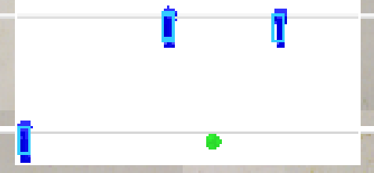

此程式目前只有尋找藍色物件位置

import vrep
import time
import random as rng
from PIL import Image as I
import array
import cv2, numpy
# function based on:
# https://github.com/simondlevy/OpenCV-Python-Hacks/blob/master/greenball_tracker.py
def speed(handle,speed):
vrep.simxSetJointTargetVelocity(clientID,handle,speed,vrep.simx_opmode_oneshot_wait)
def track_blue_object(image):
# Blur the image to reduce noise100
blur = cv2.GaussianBlur(image, (3,3),0)
# Convert BGR to HSV
hsv = cv2.cvtColor(blur, cv2.COLOR_BGR2HSV)
# Threshold the HSV image for only blue colors
ran = 20
lower_blue = numpy.array([0-ran,100,100])
upper_blue = numpy.array([0+ran,255,255])
# Threshold the HSV image to get only blue colors
mask = cv2.inRange(hsv, lower_blue, upper_blue)
# Blur the mask
bmask = cv2.GaussianBlur(mask, (5,5),0)
threshold = 100
canny_output = cv2.Canny(bmask, threshold,threshold*2)
contours, _ = cv2.findContours(canny_output, cv2.RETR_TREE, cv2.CHAIN_APPROX_SIMPLE)
# Get the moments
mu = [None]*len(contours)
for i in range(len(contours)):
mu[i] = cv2.moments(contours[i])
# Get the mass centers
mc = [None]*len(contours)
for i in range(len(contours)):
# add 1e-5 to avoid division by zero
mc[i] = (mu[i]['m10'] / (mu[i]['m00'] + 1e-5), mu[i]['m01'] / (mu[i]['m00'] + 1e-5))
return mc
vrep.simxFinish(-1)
clientID = vrep.simxStart('127.0.0.1', 19997, True, True, 5000, 5)
if clientID!=-1:
print('Connected to remote API server')
# get vision sensor objects
res, v0 = vrep.simxGetObjectHandle(clientID, 'vs1', vrep.simx_opmode_oneshot_wait)
res, v1 = vrep.simxGetObjectHandle(clientID, 'vs2', vrep.simx_opmode_oneshot_wait)
err, resolution, image = vrep.simxGetVisionSensorImage(clientID, v0, 0, vrep.simx_opmode_streaming)
err,Sphere_handle=vrep.simxGetObjectHandle(clientID,'Sphere',vrep.simx_opmode_oneshot_wait)
err,BRod_handle=vrep.simxGetObjectHandle(clientID,'BRod',vrep.simx_opmode_oneshot_wait)
err,BRev_handle=vrep.simxGetObjectHandle(clientID,'BRev',vrep.simx_opmode_oneshot_wait)
err,BMo_handle=vrep.simxGetObjectHandle(clientID,'BMo',vrep.simx_opmode_oneshot_wait)
err,RRev_handle=vrep.simxGetObjectHandle(clientID,'RRev',vrep.simx_opmode_oneshot_wait)
err,RMo_handle=vrep.simxGetObjectHandle(clientID,'RMo',vrep.simx_opmode_oneshot_wait)
err,RRod_handle=vrep.simxGetObjectHandle(clientID,'RRod',vrep.simx_opmode_oneshot_wait)
time.sleep(1)
while (vrep.simxGetConnectionId(clientID) != -1):
# get image from vision sensor 'v0'
err, resolution, image = vrep.simxGetVisionSensorImage(clientID, v0, 0, vrep.simx_opmode_buffer)
if err == vrep.simx_return_ok:
image_byte_array = array.array('b', image)
image_buffer = I.frombuffer("RGB", (resolution[0],resolution[1]), bytes(image_byte_array), "raw", "RGB", 0, 1)
img2 = numpy.asarray(image_buffer)
# try to find something blue
ret_blue = track_blue_object(img2)
ret_blue_odd = ret_blue[::2]
# get the position of blue Object
for i in range(len(ret_blue_odd)):
if ret_blue_odd[i][1] >=13 and ret_blue_odd[i][1] <=20:
blue00 = (ret_blue_odd[i][0], ret_blue_odd[i][1])
elif ret_blue_odd[i][1] >= 57 and ret_blue_odd[i][1] <=64:
if ret_blue_odd[i][0] < ret_blue_odd[i+1][0]:
blue01 = (ret_blue_odd[i][0], ret_blue_odd[i][1])
elif ret_blue[i][0] >= ret_blue[i+1][0]:
blue02 = (ret_blue_odd[i][0], ret_blue_odd[i][1])
# blue00 is first rod object position
# blue01 is second rod and left object position
# blue02 is second rod and right object position
if ret_blue:
for i in range(len(ret_blue)):
cv2.rectangle(img2,(int(ret_blue[i][0] - 2),int(ret_blue[i][1] - 5)), (int(ret_blue[i][0] + 2),int(ret_blue[i][1] + 5)), (0x33,0xcc,0xff), 1)
img2 = img2.ravel()
vrep.simxSetVisionSensorImage(clientID, v1, img2, 0, vrep.simx_opmode_oneshot)
elif err == vrep.simx_return_novalue_flag:
print("no image yet")
pass
else:
print(err)
else:
print("Failed to connect to remote API Server")
vrep.simxFinish(clientID)